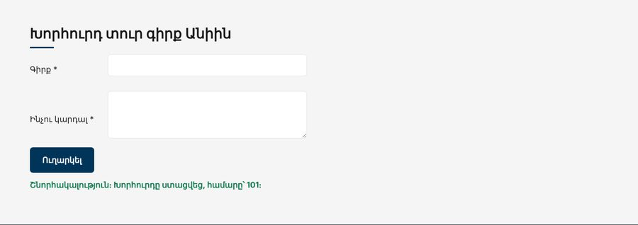

Տնային աշխատանք · JS Դաս 20 · մինի-նախագիծ
«Սերվերը» դառնում է իսկական․ առաջարկները գալիս են data/recommended.json-ից fetch-ով, իսկ «Խորհուրդ տուր գիրք Անիին» ֆորման ուղարկում է POST հարցում։ Կոդը գրում ենք async/await-ով։
Դաս 01–20․ fetch, response.ok, response.json(), async/await, try/catch/finally, POST՝ method, headers, body։

Աշխատիր քո կայքում (կամ նախորդ դասի օրինակում)։ CSS-ը տրված է, որ կենտրոնանաս JS-ի վրա․ HTML/CSS-ը արդեն գիտես։
starter/data/recommended.json — առաջարկների JSON-ըstarter/pages/books.html — «Գրքեր» էջի markup-ը (JS չկա, միայն <script>-ները)data/recommended.json՝ { "books": [...], "tips": [...] } (starter/-ից)"../data/recommended.json"fetch-ը file://-ով չի աշխատումrequest(url, options)՝ response.ok-ի ստուգում և throwgetRecommended() և sendSuggestion(title, body)async function request(url, options) {
const response = await fetch(url, options);
if (!response.ok) {
throw new Error(`Սերվերը վերադարձրեց ${response.status}`);
}
return response.json();
}load()՝ try (տվյալներ), catch (սխալ), finally (կոճակ)https://jsonplaceholder.typicode.com/posts, պատասխանից՝ idfetch անցնում է request-ով| Սխալ | Ինչպես ուղղել |
|---|---|
404-ի դեպքում Unexpected token < | response.ok-ը չի ստուգվում․ 404-ի էջը HTML է, ոչ JSON |
| CORS սխալ | Բացել ես file://-ով․ Live Server |
await is only valid in async functions | Ֆունկցիան նշիր async |
POST-ը ուղարկում է [object Object] | body: JSON.stringify(...) և Content-Type |
Սրանք Դաս 20-ի տնային աշխատանքի կետերն են։ «մինի-նախագծում» նշվածները արդեն կատարել ես վերևի քայլերում, մնացածը կատարիր առանձին ֆայլերում։
/users-ը և տպիր բոլոր անունները Console-ում։ Օգտագործիր .then ձևը։async/await-ով։ Համեմատիր՝ որն է ավելի ընթեռնելի։/users/9999։ Ավելացրու response.ok-ի ստուգում և ցույց տուր ճիշտ սխալ։ մինի-նախագծում.row / .col / .wrapper կառուցվածքով։ Ամեն քարտում՝ անուն, էլ. հասցե, քաղաք, ընկերություն։disabled։ մինի-նախագծում/posts-ը և ցուցադրիր միայն առաջին 10-ը։ Ավելացրու որոնում վերնագրով (Դաս 14-ի debounce-ով)։/posts?userId=X և ցուցադրում մոդալում (Դաս 11)։Promise.all՝ միաժամանակ բեռնելու /users և /posts։ Ցուցադրիր՝ ամեն օգտագործողի կողքին քանի՞ գրառում ունի։POST-ով, ցուցադրիր պատասխանը և ավելացրու ցուցակի սկզբում։ Օգտագործիր Դաս 13-ի վալիդացիան։ մինի-նախագծումԵրբ բաժին 03-ի բոլոր կետերը նշված են, բացիր օրինակը և դրա կոդը example/js/-ում։ Դաս 18-ից օրինակը բացիր Live Server-ով։ Գտիր մեկ բան, որ դու արել ես այլ կերպ, և մտածիր՝ որն է ավելի հասկանալի և ինչու։ Քո լուծումը կարող է տարբերվել և լինել ճիշտ։